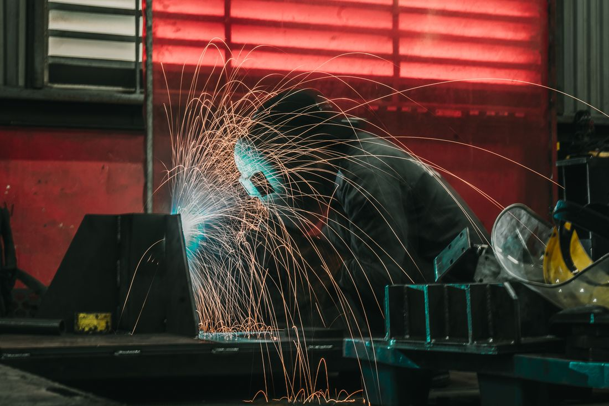
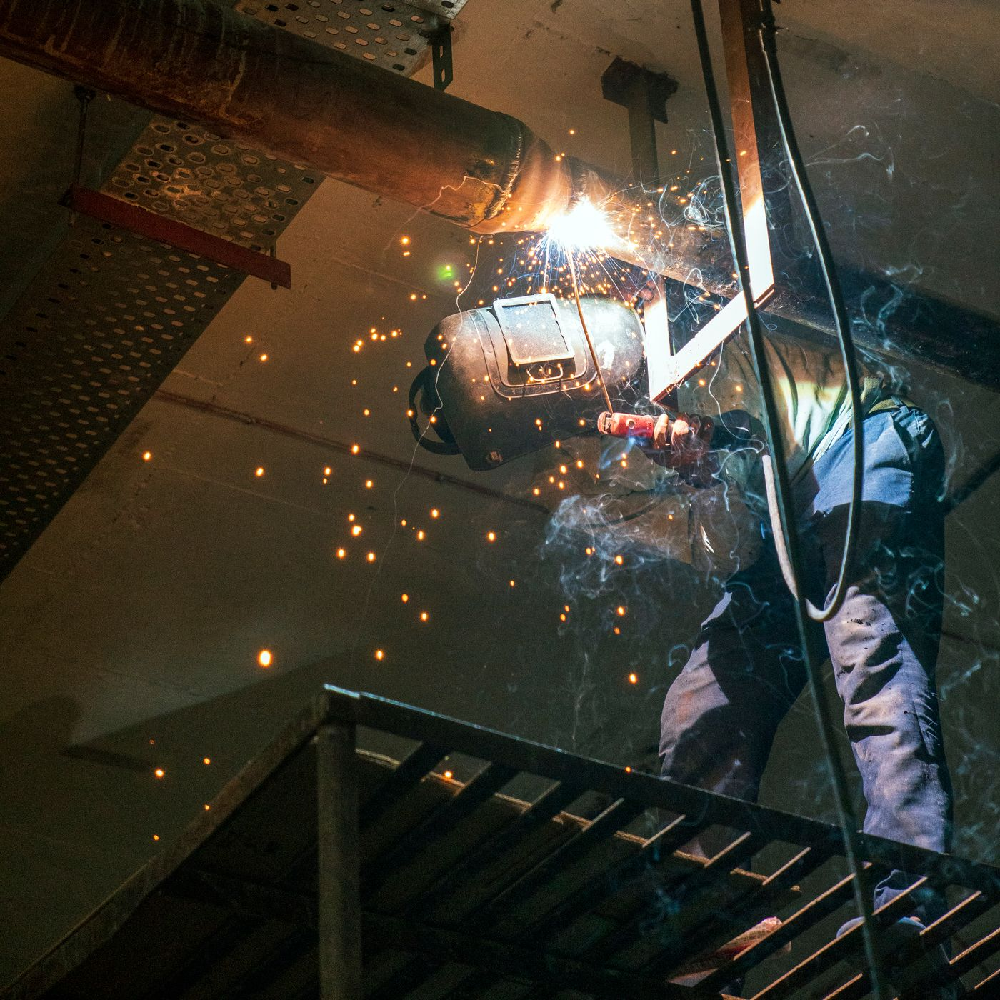
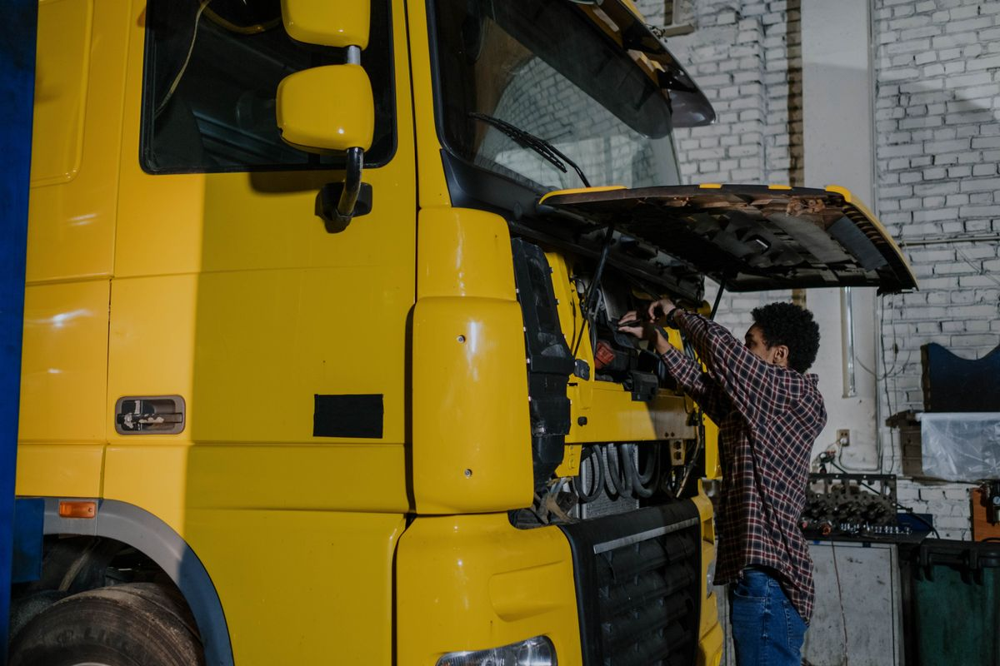
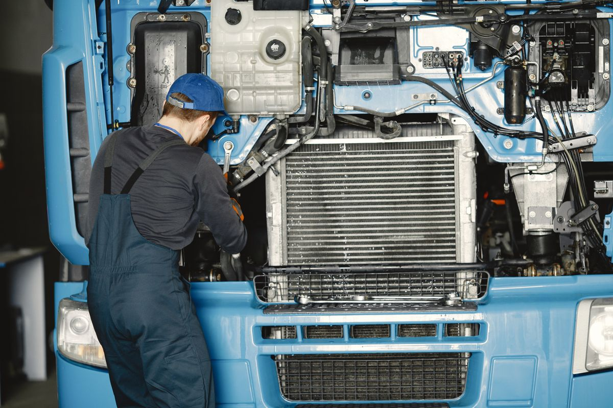
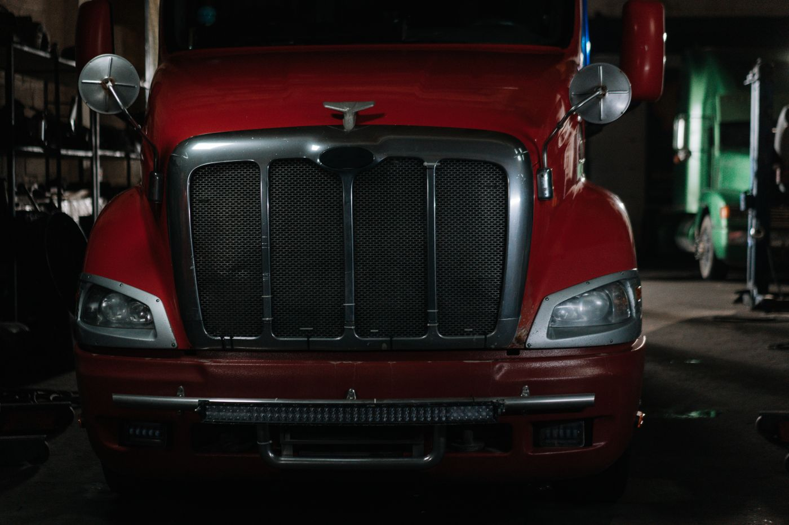
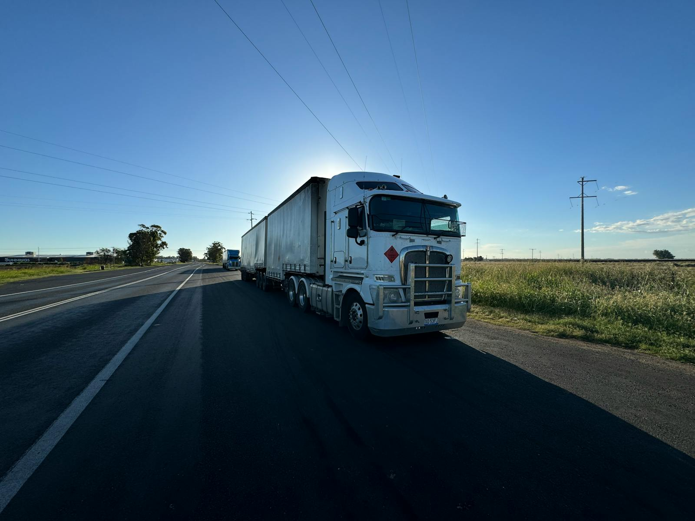

Escapamento completo
Fabricação e instalação do sistema de escape completo, dimensionado para o seu caminhão ou veículo pesado.
Uberlândia · MG — Triângulo Mineiro
Oficina especializada em escapamento para caminhões e veículos a diesel. Escapamento completo, silenciadores, coletores, tubos e ponteiras sob medida — com solda MIG/TIG e garantia no serviço.
// 01 O que fazemos
Do reparo emergencial à fabricação completa do sistema de escape — feito para caminhão, carreta e veículo a diesel.
Fabricação e instalação do sistema de escape completo, dimensionado para o seu caminhão ou veículo pesado.
Troca e reparo de silenciosos e abafadores para reduzir o ruído e manter o veículo dentro da norma.
Reparo, solda e substituição de coletores, flanges e juntas — eliminando vazamentos e perda de potência.
Tubos, curvas e ponteiras cromadas fabricados sob medida, com dobra e corte para encaixe perfeito.
Solda em inox, alumínio e aço carbono com acabamento limpo e resistente às vibrações da estrada.
Manutenção preventiva e corretiva pensada para frotas — com foco no menor tempo de parada do caminhão.

// 02 Por que a JC
Escapamento mal feito vibra, racha e volta pra oficina. O nosso é feito pra durar a quilometragem do caminhão.
Equipe focada em diesel e veículos pesados, que entende a exigência de quem roda todo dia.
Materiais selecionados e tubos dobrados sob medida — encaixe certo, sem gambiarra.
Diagnóstico rápido e execução ágil para o caminhão voltar logo pra estrada.
Confiança no que entregamos: serviço com garantia e acabamento conferido.
// 03 Na oficina
Solda, tubos, motores e veículos pesados — o dia a dia da JC Escapamentos.




// 04 A oficina
Somos uma oficina de Uberlândia especializada em escapamento para caminhões e veículos pesados. Do silencioso ao sistema completo, fabricamos, soldamos e instalamos com material de qualidade e acabamento que aguenta a vibração da estrada.
Ficamos no bairro Nossa Senhora das Graças e atendemos motoristas, autônomos e frotas de Uberlândia e de todo o Triângulo Mineiro.

// 05 Dúvidas frequentes
Não achou sua dúvida? Fala com a gente no telefone ou WhatsApp.
Sim. Somos especializados em escapamento para caminhões, carretas, ônibus e veículos pesados a diesel. Também atendemos utilitários.
Sim. Fabricamos tubos, curvas e ponteiras sob medida e montamos o sistema de escapamento completo conforme o seu veículo.
Sim. Trabalhamos com peças de qualidade e solda MIG/TIG com acabamento, e oferecemos garantia no serviço executado.
Sim. Atendemos frotas com foco em agilidade e no menor tempo de parada do veículo, com manutenção preventiva e corretiva.
Atendemos Uberlândia e todo o Triângulo Mineiro. Nossa oficina fica no bairro Nossa Senhora das Graças, em Uberlândia, MG.
// 06 Fale com a JC
Traga o caminhão ou nos chame para um orçamento sem compromisso. Atendimento de segunda a sexta.